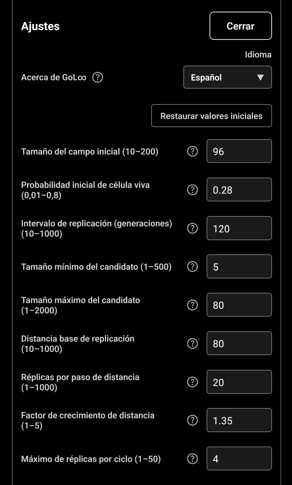
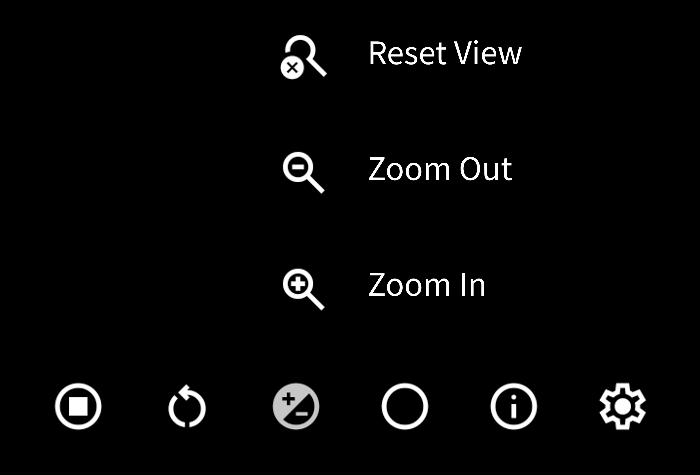
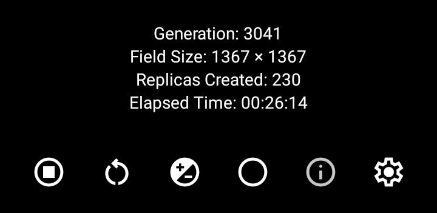

GoL∞ (GoL Infinity)
使い方
基本の使い方
GoL∞ (GoL Infinity)は、Conwayのライフゲームを無限に広がる論理グリッド上で観察するアプリです。起動時はランダムに生成された生セルが表示され、画面下部の開始ボタンを押すと世代が進みます。一定の世代間隔ごとに条件を満たしたセルのまとまりが複製され、フィールドが広がっていきます。
通常表示では、画面をドラッグして表示位置を移動できます。表示倍率ボタンから拡大・縮小と表示位置のリセットを行えます。
画面下部のメニューボタン

① 開始／停止
シミュレーションを開始または一時停止します。停止中は再生マーク、実行中は停止マークで表示されます。停止しても現在のフィールドと世代は保持されます。
② 再スタート
現在のフィールドを破棄し、設定されている「初期フィールドサイズ」と「初期生セル確率」を使って新しいフィールドを作成します。世代、累計複製数、累計時間、表示位置と倍率も初期状態に戻り、新しいシミュレーションが開始されます。
③ 表示倍率
表示倍率用の3つのボタンを開閉します。表示されたボタンでは、表示位置と倍率のリセット、縮小、拡大を行えます。これは見え方だけを変更する機能で、セルの状態やシミュレーションの進行には影響しません。

④ 表示モード
通常表示と変換表示を切り替えます。
通常表示ではセルを平面上に表示し、画面をドラッグして観察位置を移動できます。変換表示では、中心から見た方向を保ちながら、遠くにあるセルほど中心からの距離を圧縮して表示します。これにより、通常表示では画面の外に広がるセルの分布や、全体の成長の様子をひとつの画面で観察できます。
表示モードを切り替えても、セルの状態や世代は変わりません。
⑤ 情報
情報表示を開閉します。表示される内容は「世代」「フィールドサイズ」「累計複製数」「累計時間」です。情報表示の状態は保存され、次回起動時にも引き継がれます。

⑥ 設定
設定画面を開きます。言語、初期フィールド、複製に関する値、広告解除を設定できます。「閉じる」を押すと入力値が保存され、シミュレーション画面へ戻ります。各項目の「？」を押すと、その項目の説明が表示されます。
設定画面
GoL∞ (GoL Infinity)とは
「？」を押すと、GoL∞ (GoL Infinity)のシミュレーションと独自の複製機能についての説明を表示します。
言語
設定画面と情報表示に使う言語を選択します。変更はすぐに画面へ反映され、次回起動時にも引き継がれます。
初期値に戻す
下記9項目の入力値を初期値に戻します。「閉じる」を押したときに保存されます。
初期フィールドサイズ（10～200／初期値96）
新しいフィールドを作成するときの一辺あたりのセル配置数です。96なら横96×縦96の範囲に生セルを配置します。この範囲が壁になるわけではなく、シミュレーションは外側へも広がります。変更は次回の再スタートから反映されます。
初期生セル確率（0.01～0.8／初期値0.28）
新しいフィールドの各位置が生セルで始まる確率です。0.28は28%を表します。実際の生セル数は毎回ランダムに変わります。変更は次回の再スタートから反映され、その後のConwayルールには影響しません。
複製間隔（世代）（10～1000／初期値120）
複製できるセルのまとまりがあるかを調べる世代間隔です。120なら120、240、360世代目という間隔で判定します。条件に合うコピー元や配置先がなければ、その世代で複製されないことがあります。
複製候補の最小セル数（1～500／初期値5）
複製候補になれる、つながった生セルのまとまりの最小セル数です。これより小さいまとまりはフィールドに残りますが、コピーされません。最大セル数以下の値を指定してください。
複製候補の最大セル数（1～2000／初期値80）
複製候補になれる、つながった生セルのまとまりの最大セル数です。これより大きいまとまりはフィールドに残りますが、コピーされません。最小セル数以上の値を指定してください。
基本複製距離（10～1000／初期値80）
コピーの配置先を探す基準距離です。画面上のピクセルではなく、論理セル数で指定します。空いている場所を優先するため、実際の移動距離が短くなる場合があります。
距離拡大間隔（複製数）（1～1000／初期値20）
コピーの探索距離を1段階広げるまでに必要な、累計の複製成功数です。配置に失敗した試行は数えません。小さい値ほど、より早く遠い配置先を探すようになります。
複製距離拡大係数（1～5／初期値1.35）
距離拡大の段階が進むたびに基本複製距離へ掛ける倍率です。1では探索距離は広がらず、1より大きい値では段階的に広がります。Conwayルールやセルの自然な移動には影響しません。
1回の複製処理あたりの最大複製数（1～50／初期値4）
1回の複製判定で実際に作成できるセルのまとまりの最大数です。配置に失敗した試行は含みません。生セル総数などの安全制限により、設定値より少なくなることがあります。
設定値が反映されるタイミング
入力した設定値は「閉じる」を押したときに保存されます。初期フィールドサイズと初期生セル確率は次回の再スタートから、複製に関する設定は次回以降の複製判定から反映されます。範囲外の値や、最小セル数が最大セル数を上回る入力は採用されません。
広告を解除／購入を復元
買い切りで広告を解除できます。すでに同じGoogle Playアカウントで購入済みの場合は「購入を復元」を使用します。購入の確認にはインターネット接続が必要です。
プライバシー設定
広告について同意内容の確認や変更が必要な地域で表示されます。広告に関するプライバシーの選択画面を開きます。